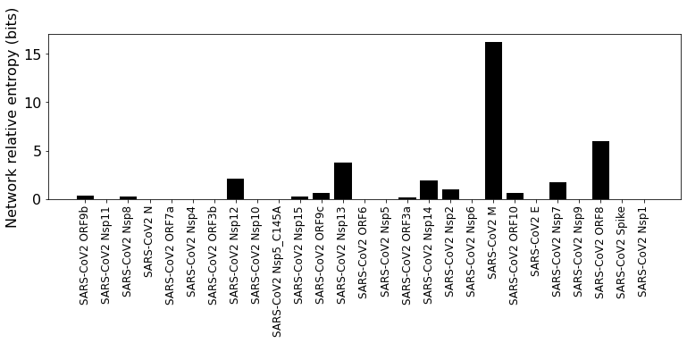

<!DOCTYPE html>
<html class="writer-html5" lang="en" >
<head>
  <meta charset="utf-8" /><meta name="generator" content="Docutils 0.17.1: http://docutils.sourceforge.net/" />

  <meta name="viewport" content="width=device-width, initial-scale=1.0" />
  <title>Information transfer due to viral PPI &mdash; CoReI Alpha 1 (0.1.1.1) documentation</title>
      <link rel="stylesheet" href="_static/pygments.css" type="text/css" />
      <link rel="stylesheet" href="_static/css/theme.css" type="text/css" />
  <!--[if lt IE 9]>
    <script src="_static/js/html5shiv.min.js"></script>
  <![endif]-->
  
        <script data-url_root="./" id="documentation_options" src="_static/documentation_options.js"></script>
        <script src="_static/jquery.js"></script>
        <script src="_static/underscore.js"></script>
        <script src="_static/doctools.js"></script>
        <script crossorigin="anonymous" integrity="sha256-Ae2Vz/4ePdIu6ZyI/5ZGsYnb+m0JlOmKPjt6XZ9JJkA=" src="https://cdnjs.cloudflare.com/ajax/libs/require.js/2.3.4/require.min.js"></script>
        <script>window.MathJax = {"tex": {"inlineMath": [["$", "$"], ["\\(", "\\)"]], "processEscapes": true}, "options": {"ignoreHtmlClass": "tex2jax_ignore|mathjax_ignore|document", "processHtmlClass": "tex2jax_process|mathjax_process|math|output_area"}}</script>
        <script defer="defer" src="https://cdn.jsdelivr.net/npm/mathjax@3/es5/tex-mml-chtml.js"></script>
    <script src="_static/js/theme.js"></script>
    <link rel="index" title="Index" href="genindex.html" />
    <link rel="search" title="Search" href="search.html" />
    <link rel="next" title="Communicated proteins" href="Communicated_Proteins.html" />
    <link rel="prev" title="SARS-CoV2 interactions" href="SARS-CoV-2_human_PPI.html" /> 
</head>

<body class="wy-body-for-nav"> 
  <div class="wy-grid-for-nav">
    <nav data-toggle="wy-nav-shift" class="wy-nav-side">
      <div class="wy-side-scroll">
        <div class="wy-side-nav-search" >
            <a href="index.html" class="icon icon-home"> CoReI
          </a>
<div role="search">
  <form id="rtd-search-form" class="wy-form" action="search.html" method="get">
    <input type="text" name="q" placeholder="Search docs" />
    <input type="hidden" name="check_keywords" value="yes" />
    <input type="hidden" name="area" value="default" />
  </form>
</div>
        </div><div class="wy-menu wy-menu-vertical" data-spy="affix" role="navigation" aria-label="Navigation menu">
              <p class="caption" role="heading"><span class="caption-text">Contents:</span></p>
<ul class="current">
<li class="toctree-l1"><a class="reference internal" href="Construction_of_Top_Level_Pathway_Network.html">Network Construction</a></li>
<li class="toctree-l1"><a class="reference internal" href="Add-human_PPI.html">Add interactome to reactome</a></li>
<li class="toctree-l1"><a class="reference internal" href="SARS-CoV-2_human_PPI.html">SARS-CoV2 interactions</a></li>
<li class="toctree-l1 current"><a class="current reference internal" href="#">Information transfer due to viral PPI</a></li>
<li class="toctree-l1"><a class="reference internal" href="Communicated_Proteins.html">Communicated proteins</a></li>
<li class="toctree-l1"><a class="reference internal" href="communicated_ORA.html">Communicated genes overrepresentation analysis</a></li>
<li class="toctree-l1"><a class="reference internal" href="ncip.html">ncip</a></li>
<li class="toctree-l1"><a class="reference internal" href="enGO.html">enGO</a></li>
<li class="toctree-l1"><a class="reference internal" href="reader.html">reader</a></li>
<li class="toctree-l1"><a class="reference internal" href="dependencies.html">Dependencies</a></li>
</ul>

        </div>
      </div>
    </nav>

    <section data-toggle="wy-nav-shift" class="wy-nav-content-wrap"><nav class="wy-nav-top" aria-label="Mobile navigation menu" >
          <i data-toggle="wy-nav-top" class="fa fa-bars"></i>
          <a href="index.html">CoReI</a>
      </nav>

      <div class="wy-nav-content">
        <div class="rst-content">
          <div role="navigation" aria-label="Page navigation">
  <ul class="wy-breadcrumbs">
      <li><a href="index.html" class="icon icon-home"></a> &raquo;</li>
      <li>Information transfer due to viral PPI</li>
      <li class="wy-breadcrumbs-aside">
            <a href="_sources/Information_transfer_in_the_network.rst.txt" rel="nofollow"> View page source</a>
      </li>
  </ul>
  <hr/>
</div>
          <div role="main" class="document" itemscope="itemscope" itemtype="http://schema.org/Article">
           <div itemprop="articleBody">
             
  
<style>
/* CSS overrides for sphinx_rtd_theme */

/* 24px margin */
.nbinput.nblast.container,
.nboutput.nblast.container {
    margin-bottom: 19px;  /* padding has already 5px */
}

/* ... except between code cells! */
.nblast.container + .nbinput.container {
    margin-top: -19px;
}

.admonition > p:before {
    margin-right: 4px;  /* make room for the exclamation icon */
}

/* Fix math alignment, see https://github.com/rtfd/sphinx_rtd_theme/pull/686 */
.math {
    text-align: unset;
}
</style>
<section id="information-transfer-due-to-viral-ppi">
<h1>Information transfer due to viral PPI<a class="headerlink" href="#information-transfer-due-to-viral-ppi" title="Permalink to this headline"></a></h1>
<p>The SARS-CoV-2 and human protein interactions are treated as information
sources. Each edge in the pathway network is treated as a binary
symmetric information channel. Initial state of the network is all
network nodes at maximum entropy state. The information source nodes are
fixed at low entropy state. Information propagates through the network
edges (information channels) to the other nodes (receiver nodes) of the
network. We use relative entropy of the receiver nodes as a measure of
impact of the SARS-CoV-2 proteins.</p>
<div class="highlight-ipython3 notranslate"><div class="highlight"><pre><span></span><span class="kn">import</span> <span class="nn">os</span><span class="o">,</span> <span class="nn">sys</span>
<span class="kn">import</span> <span class="nn">numpy</span> <span class="k">as</span> <span class="nn">np</span>
<span class="kn">import</span> <span class="nn">scipy</span> <span class="k">as</span> <span class="nn">sp</span>
<span class="kn">import</span> <span class="nn">pandas</span> <span class="k">as</span> <span class="nn">pd</span>
<span class="kn">import</span> <span class="nn">copy</span> <span class="k">as</span> <span class="nn">copy</span>
<span class="kn">from</span> <span class="nn">tqdm.notebook</span> <span class="kn">import</span> <span class="n">tqdm</span>
<span class="kn">import</span> <span class="nn">math</span>
<span class="kn">import</span> <span class="nn">scipy.stats</span> <span class="k">as</span> <span class="nn">st</span>

<span class="kn">from</span> <span class="nn">CoRe</span> <span class="kn">import</span> <span class="n">reader</span>
<span class="kn">from</span> <span class="nn">CoRe.ncip</span> <span class="kn">import</span> <span class="n">ncip</span>
<span class="kn">from</span> <span class="nn">CoRe.BA_C</span> <span class="kn">import</span> <span class="n">BA</span>

<span class="kn">import</span> <span class="nn">importlib</span>

<span class="kn">import</span> <span class="nn">networkx</span> <span class="k">as</span> <span class="nn">nx</span>
<span class="kn">import</span> <span class="nn">matplotlib.pyplot</span> <span class="k">as</span> <span class="nn">plt</span>
<span class="kn">import</span> <span class="nn">json</span>
</pre></div>
</div>
<div class="highlight-ipython3 notranslate"><div class="highlight"><pre><span></span><span class="n">current_directory</span> <span class="o">=</span> <span class="n">os</span><span class="o">.</span><span class="n">getcwd</span><span class="p">()</span>

<span class="n">data_directory</span> <span class="o">=</span> <span class="n">current_directory</span> <span class="o">+</span> <span class="s2">&quot;/Examples&quot;</span>
<span class="n">os</span><span class="o">.</span><span class="n">chdir</span><span class="p">(</span><span class="n">data_directory</span><span class="p">)</span>

<span class="n">f</span> <span class="o">=</span> <span class="nb">open</span><span class="p">(</span><span class="s1">&#39;SARS_CoV2-interactions.json&#39;</span><span class="p">)</span>
<span class="n">all_SARS_nodes</span> <span class="o">=</span> <span class="n">json</span><span class="o">.</span><span class="n">load</span><span class="p">(</span><span class="n">f</span><span class="p">)</span>
<span class="n">f</span><span class="o">.</span><span class="n">close</span><span class="p">()</span>

<span class="n">sars_pnames</span> <span class="o">=</span> <span class="nb">list</span><span class="p">(</span><span class="n">all_SARS_nodes</span><span class="p">)</span>
</pre></div>
</div>
<div class="highlight-ipython3 notranslate"><div class="highlight"><pre><span></span><span class="n">selected_pathway</span> <span class="o">=</span> <span class="s1">&#39;Immune System&#39;</span>
<span class="n">pathway_nametag</span> <span class="o">=</span> <span class="n">selected_pathway</span><span class="o">.</span><span class="n">replace</span><span class="p">(</span><span class="s1">&#39; &#39;</span><span class="p">,</span><span class="s1">&#39;_&#39;</span><span class="p">)</span>

<span class="n">network_type</span> <span class="o">=</span> <span class="s1">&#39;medium-PPI&#39;</span>

<span class="n">data_directory</span> <span class="o">=</span> <span class="n">current_directory</span> <span class="o">+</span> <span class="s2">&quot;/Examples/&quot;</span> <span class="o">+</span> <span class="n">pathway_nametag</span>
<span class="n">os</span><span class="o">.</span><span class="n">chdir</span><span class="p">(</span><span class="n">data_directory</span><span class="p">)</span>

<span class="n">edge_data</span> <span class="o">=</span> <span class="n">pd</span><span class="o">.</span><span class="n">read_pickle</span><span class="p">(</span><span class="n">pathway_nametag</span><span class="o">+</span><span class="s1">&#39;_&#39;</span><span class="o">+</span><span class="n">network_type</span><span class="o">+</span><span class="s1">&#39;-edges.pkl&#39;</span><span class="p">)</span>
<span class="n">node_data</span> <span class="o">=</span> <span class="n">pd</span><span class="o">.</span><span class="n">read_pickle</span><span class="p">(</span><span class="n">pathway_nametag</span><span class="o">+</span><span class="s1">&#39;_&#39;</span><span class="o">+</span><span class="n">network_type</span><span class="o">+</span><span class="s1">&#39;-nodes.pkl&#39;</span><span class="p">)</span>
</pre></div>
</div>
<div class="highlight-ipython3 notranslate"><div class="highlight"><pre><span></span><span class="n">remake_graph</span> <span class="o">=</span> <span class="kc">False</span>

<span class="k">if</span> <span class="n">remake_graph</span><span class="o">==</span><span class="kc">False</span><span class="p">:</span>
    <span class="n">netObj</span> <span class="o">=</span> <span class="n">ncip</span><span class="p">()</span>
    <span class="n">netObj</span><span class="o">.</span><span class="n">load_graph</span><span class="p">(</span><span class="n">pathway_nametag</span><span class="o">+</span><span class="s2">&quot;-&quot;</span><span class="o">+</span><span class="n">network_type</span><span class="o">+</span><span class="s2">&quot;.gml&quot;</span><span class="p">)</span>
<span class="k">else</span><span class="p">:</span>
    <span class="n">netObj</span> <span class="o">=</span> <span class="n">ncip</span><span class="p">()</span>
    <span class="n">netObj</span><span class="o">.</span><span class="n">load_data</span><span class="p">(</span><span class="n">edge_data</span><span class="p">,</span><span class="n">node_data</span><span class="p">)</span>
    <span class="n">netObj</span><span class="o">.</span><span class="n">make_graph</span><span class="p">()</span>
    <span class="n">netObj</span><span class="o">.</span><span class="n">save_network</span><span class="p">(</span><span class="n">pathway_nametag</span><span class="p">,</span><span class="n">network_type</span><span class="p">)</span>
</pre></div>
</div>
<div class="highlight-ipython3 notranslate"><div class="highlight"><pre><span></span><span class="c1">#netObj.write_nodes_and_edges(filetag=pathway_nametag)</span>
</pre></div>
</div>
<div class="highlight-ipython3 notranslate"><div class="highlight"><pre><span></span><span class="n">f</span> <span class="o">=</span> <span class="nb">open</span><span class="p">(</span><span class="s1">&#39;SARS_CoV2-&#39;</span><span class="o">+</span><span class="n">pathway_nametag</span><span class="o">+</span><span class="s1">&#39;_interactions.json&#39;</span><span class="p">)</span>
<span class="n">SARS_nodes</span> <span class="o">=</span> <span class="n">json</span><span class="o">.</span><span class="n">load</span><span class="p">(</span><span class="n">f</span><span class="p">)</span>
<span class="n">f</span><span class="o">.</span><span class="n">close</span><span class="p">()</span>
</pre></div>
</div>
<p><strong>Construction of the information channel model for the network.</strong></p>
<p><span class="math notranslate nohighlight">\(\rho\)</span> is the communication error for each edge. If a node
receives input from multiple edges, the receiver state is the mean of
the individual output states. The default channel type is a binary
symmetric channel as defined in <a class="reference external" href="https://books.google.com/books?hl=en&amp;lr=&amp;id=VWq5GG6ycxMC&amp;oi=fnd&amp;pg=PR15&amp;ots=bZ6fK1WaYP&amp;sig=g2JGYtx-EFJKhoFBG-THaWLfKY0#v=onepage&amp;q&amp;f=false">Elements of information
theory</a>.</p>
<div class="highlight-ipython3 notranslate"><div class="highlight"><pre><span></span><span class="n">initial_state_type</span> <span class="o">=</span> <span class="s1">&#39;maxEnt&#39;</span>

<span class="n">errorname</span> <span class="o">=</span> <span class="s1">&#39;0.0&#39;</span>
<span class="n">rho</span> <span class="o">=</span> <span class="nb">float</span><span class="p">(</span><span class="n">errorname</span><span class="p">)</span>

<span class="n">input_bits</span> <span class="o">=</span> <span class="mi">1</span>
<span class="n">code_length</span> <span class="o">=</span> <span class="nb">int</span><span class="p">(</span><span class="mi">2</span><span class="o">**</span><span class="n">input_bits</span><span class="p">)</span>

<span class="n">max_entropy_state</span> <span class="o">=</span> <span class="p">(</span><span class="mf">1.0</span><span class="o">/</span><span class="nb">float</span><span class="p">(</span><span class="n">code_length</span><span class="p">))</span><span class="o">*</span><span class="n">np</span><span class="o">.</span><span class="n">ones</span><span class="p">(</span><span class="n">shape</span><span class="o">=</span><span class="p">(</span><span class="n">code_length</span><span class="p">,))</span>

<span class="n">low_state</span> <span class="o">=</span> <span class="n">np</span><span class="o">.</span><span class="n">zeros</span><span class="p">(</span><span class="n">shape</span><span class="o">=</span><span class="p">(</span><span class="n">code_length</span><span class="p">,))</span>
<span class="n">low_state</span><span class="p">[</span><span class="o">-</span><span class="mi">1</span><span class="p">]</span> <span class="o">=</span> <span class="mf">1.0</span>

<span class="n">high_state</span> <span class="o">=</span> <span class="n">np</span><span class="o">.</span><span class="n">zeros</span><span class="p">(</span><span class="n">shape</span><span class="o">=</span><span class="p">(</span><span class="n">code_length</span><span class="p">,))</span>
<span class="n">high_state</span><span class="p">[</span><span class="mi">0</span><span class="p">]</span> <span class="o">=</span> <span class="mf">1.0</span>

<span class="k">if</span> <span class="n">initial_state_type</span><span class="o">==</span><span class="s1">&#39;high&#39;</span><span class="p">:</span>
    <span class="n">initial_state</span> <span class="o">=</span> <span class="n">high_state</span>
<span class="k">elif</span> <span class="n">initial_state_type</span><span class="o">==</span><span class="s1">&#39;low&#39;</span><span class="p">:</span>
    <span class="n">initial_state</span> <span class="o">=</span> <span class="n">low_state</span>
<span class="k">else</span><span class="p">:</span>
    <span class="n">initial_state</span> <span class="o">=</span> <span class="n">max_entropy_state</span>

<span class="nb">print</span><span class="p">(</span><span class="n">high_state</span><span class="p">,</span><span class="n">low_state</span><span class="p">)</span>

<span class="n">netObj</span><span class="o">.</span><span class="n">construct_C</span><span class="p">(</span><span class="n">rho</span><span class="p">,</span><span class="n">h</span><span class="o">=</span><span class="n">input_bits</span><span class="p">,</span><span class="n">neglect_modules</span><span class="o">=</span><span class="p">[])</span>
<span class="n">node_list</span> <span class="o">=</span> <span class="nb">list</span><span class="p">(</span><span class="n">netObj</span><span class="o">.</span><span class="n">G_d</span><span class="o">.</span><span class="n">nodes</span><span class="p">)</span>
</pre></div>
</div>
<div class="highlight-default notranslate"><div class="highlight"><pre><span></span><span class="p">[</span><span class="mf">1.</span> <span class="mf">0.</span><span class="p">]</span> <span class="p">[</span><span class="mf">0.</span> <span class="mf">1.</span><span class="p">]</span>
</pre></div>
</div>
<p><strong>Initial and boundary conditions for information propagation</strong></p>
<p>The state of each node is define by the binary probability state
<span class="math notranslate nohighlight">\(\{P(n=1),P(n=0)\}\)</span>, where the abundance (or copy number) the
physical entity (n) is coarse-grained into a binary variable high (1) or
low (0). The maximum entropy state for each node is <span class="math notranslate nohighlight">\(\{0.5,0.5\}\)</span>.
We set every node in the network initially at the maximum entropy state.</p>
<p>We assume that direct interaction with SARS-CoV-2 proteins reduces the
effective abundance of the associated network nodes, so we set the state
of these nodes at <span class="math notranslate nohighlight">\(\{0,1\}\)</span>. Additionally, we set the state of
ATP, ADP, and Pi at the maximum entropy state <span class="math notranslate nohighlight">\(\{0.5,0.5\}\)</span>.</p>
<div class="highlight-ipython3 notranslate"><div class="highlight"><pre><span></span><span class="n">additional_source_nodes</span> <span class="o">=</span> <span class="p">[]</span><span class="c1">#[&#39;UBE2L6&#39;]#[&quot;R-ALL-139836&quot;,&quot;R-ALL-196180&quot;,&quot;R-ALL-113592&quot;,&quot;R-ALL-29370&quot;,&quot;R-ALL-29358&quot;,&quot;R-ALL-113582&quot;,&quot;R-ALL-29372&quot;]</span>
</pre></div>
</div>
<div class="highlight-ipython3 notranslate"><div class="highlight"><pre><span></span><span class="n">netObj</span><span class="o">.</span><span class="n">disconnect_drug_nodes</span><span class="p">()</span>
</pre></div>
</div>
<div class="highlight-ipython3 notranslate"><div class="highlight"><pre><span></span><span class="c1">#netObj.disconnect_nodes(&#39;ChemicalDrug&#39;,additional_source_nodes)</span>
<span class="c1">#netObj.disconnect_nodes(&#39;ProteinDrug&#39;,additional_source_nodes)</span>
<span class="c1">#netObj.disconnect_nodes(&#39;SimpleEntity&#39;,additional_source_nodes)</span>
</pre></div>
</div>
<div class="highlight-ipython3 notranslate"><div class="highlight"><pre><span></span><span class="n">topological_source_count</span> <span class="o">=</span> <span class="mi">0</span>

<span class="k">for</span> <span class="n">nG</span> <span class="ow">in</span> <span class="n">netObj</span><span class="o">.</span><span class="n">G_d</span><span class="o">.</span><span class="n">nodes</span><span class="p">():</span>
    <span class="k">if</span> <span class="n">netObj</span><span class="o">.</span><span class="n">G_d</span><span class="o">.</span><span class="n">in_degree</span><span class="p">(</span><span class="n">nG</span><span class="p">)</span><span class="o">==</span><span class="mi">0</span><span class="p">:</span>
        <span class="n">topological_source_count</span> <span class="o">+=</span> <span class="mi">1</span>

<span class="nb">print</span><span class="p">(</span><span class="n">topological_source_count</span><span class="p">)</span>

<span class="nb">print</span><span class="p">(</span><span class="nb">len</span><span class="p">(</span><span class="n">node_list</span><span class="p">),</span><span class="nb">len</span><span class="p">(</span><span class="n">netObj</span><span class="o">.</span><span class="n">G_d</span><span class="o">.</span><span class="n">nodes</span><span class="p">()))</span>
</pre></div>
</div>
<div class="highlight-default notranslate"><div class="highlight"><pre><span></span><span class="mi">89</span>
<span class="mi">3030</span> <span class="mi">3030</span>
</pre></div>
</div>
<div class="highlight-ipython3 notranslate"><div class="highlight"><pre><span></span><span class="n">initial_network_state</span> <span class="o">=</span> <span class="n">np</span><span class="o">.</span><span class="n">zeros</span><span class="p">(</span><span class="n">shape</span><span class="o">=</span><span class="p">(</span><span class="n">netObj</span><span class="o">.</span><span class="n">C_sparse</span><span class="o">.</span><span class="n">shape</span><span class="p">[</span><span class="mi">0</span><span class="p">],</span><span class="mi">1</span><span class="p">))</span>
<span class="n">network_sources</span> <span class="o">=</span> <span class="p">{}</span>

<span class="k">for</span> <span class="n">n</span> <span class="ow">in</span> <span class="nb">range</span><span class="p">(</span><span class="mi">0</span><span class="p">,</span><span class="nb">len</span><span class="p">(</span><span class="n">node_list</span><span class="p">)):</span>
    <span class="n">initial_network_state</span><span class="p">[</span><span class="n">code_length</span><span class="o">*</span><span class="n">n</span><span class="p">:</span><span class="n">code_length</span><span class="o">*</span><span class="p">(</span><span class="n">n</span><span class="o">+</span><span class="mi">1</span><span class="p">),</span><span class="mi">0</span><span class="p">]</span> <span class="o">=</span> <span class="n">initial_state</span>

<span class="n">network_sources</span> <span class="o">=</span> <span class="p">[]</span>

<span class="n">reference_final_state</span><span class="p">,</span> <span class="n">steps</span> <span class="o">=</span> <span class="n">netObj</span><span class="o">.</span><span class="n">get_final_state</span><span class="p">(</span><span class="n">initial_network_state</span><span class="p">,[])</span>
<span class="n">reference_final_entropy</span> <span class="o">=</span> <span class="n">netObj</span><span class="o">.</span><span class="n">state_entropy</span><span class="p">(</span><span class="n">reference_final_state</span><span class="p">,[])</span>
<span class="nb">print</span><span class="p">(</span><span class="s1">&#39;Reference state relative entropy: &#39;</span><span class="p">,</span><span class="n">reference_final_entropy</span><span class="p">)</span>
</pre></div>
</div>
<div class="highlight-default notranslate"><div class="highlight"><pre><span></span><span class="n">Reference</span> <span class="n">state</span> <span class="n">relative</span> <span class="n">entropy</span><span class="p">:</span>  <span class="mf">0.0</span>
</pre></div>
</div>
<div class="highlight-ipython3 notranslate"><div class="highlight"><pre><span></span><span class="n">network_state</span> <span class="o">=</span> <span class="p">{}</span>
<span class="n">network_sources</span> <span class="o">=</span> <span class="p">{}</span>

<span class="k">for</span> <span class="n">k</span> <span class="ow">in</span> <span class="n">tqdm</span><span class="p">(</span><span class="n">SARS_nodes</span><span class="o">.</span><span class="n">keys</span><span class="p">()):</span>
    <span class="n">network_state</span><span class="p">[</span><span class="n">k</span><span class="p">]</span> <span class="o">=</span> <span class="n">np</span><span class="o">.</span><span class="n">zeros</span><span class="p">(</span><span class="n">shape</span><span class="o">=</span><span class="p">(</span><span class="n">netObj</span><span class="o">.</span><span class="n">C_sparse</span><span class="o">.</span><span class="n">shape</span><span class="p">[</span><span class="mi">0</span><span class="p">],</span><span class="mi">1</span><span class="p">))</span>

    <span class="k">for</span> <span class="n">n</span> <span class="ow">in</span> <span class="nb">range</span><span class="p">(</span><span class="mi">0</span><span class="p">,</span><span class="nb">len</span><span class="p">(</span><span class="n">node_list</span><span class="p">)):</span>
        <span class="n">network_state</span><span class="p">[</span><span class="n">k</span><span class="p">][</span><span class="n">code_length</span><span class="o">*</span><span class="n">n</span><span class="p">:</span><span class="n">code_length</span><span class="o">*</span><span class="p">(</span><span class="n">n</span><span class="o">+</span><span class="mi">1</span><span class="p">),</span><span class="mi">0</span><span class="p">]</span> <span class="o">=</span> <span class="n">initial_state</span>

    <span class="n">network_sources</span><span class="p">[</span><span class="n">k</span><span class="p">]</span> <span class="o">=</span> <span class="p">[]</span>

    <span class="k">for</span> <span class="n">n</span> <span class="ow">in</span> <span class="n">SARS_nodes</span><span class="p">[</span><span class="n">k</span><span class="p">]:</span>
        <span class="k">try</span><span class="p">:</span>
            <span class="n">i</span> <span class="o">=</span> <span class="n">node_list</span><span class="o">.</span><span class="n">index</span><span class="p">(</span><span class="n">n</span><span class="p">)</span>

            <span class="n">network_state</span><span class="p">[</span><span class="n">k</span><span class="p">][</span><span class="n">netObj</span><span class="o">.</span><span class="n">code_length</span><span class="o">*</span><span class="n">i</span><span class="p">:</span><span class="n">netObj</span><span class="o">.</span><span class="n">code_length</span><span class="o">*</span><span class="p">(</span><span class="n">i</span><span class="o">+</span><span class="mi">1</span><span class="p">),</span><span class="mi">0</span><span class="p">]</span> <span class="o">=</span> <span class="n">low_state</span>

            <span class="n">network_sources</span><span class="p">[</span><span class="n">k</span><span class="p">]</span><span class="o">.</span><span class="n">append</span><span class="p">(</span><span class="n">i</span><span class="p">)</span>
        <span class="k">except</span> <span class="ne">ValueError</span><span class="p">:</span>
            <span class="k">pass</span>

    <span class="k">for</span> <span class="n">n</span> <span class="ow">in</span> <span class="n">additional_source_nodes</span><span class="p">:</span>
        <span class="k">try</span><span class="p">:</span>
            <span class="n">i</span> <span class="o">=</span> <span class="n">node_list</span><span class="o">.</span><span class="n">index</span><span class="p">(</span><span class="n">n</span><span class="p">)</span>

            <span class="n">network_state</span><span class="p">[</span><span class="n">k</span><span class="p">][</span><span class="n">netObj</span><span class="o">.</span><span class="n">code_length</span><span class="o">*</span><span class="n">i</span><span class="p">:</span><span class="n">netObj</span><span class="o">.</span><span class="n">code_length</span><span class="o">*</span><span class="p">(</span><span class="n">i</span><span class="o">+</span><span class="mi">1</span><span class="p">),</span><span class="mi">0</span><span class="p">]</span> <span class="o">=</span> <span class="n">high_state</span>

            <span class="n">network_sources</span><span class="p">[</span><span class="n">k</span><span class="p">]</span><span class="o">.</span><span class="n">append</span><span class="p">(</span><span class="n">i</span><span class="p">)</span>
        <span class="k">except</span> <span class="ne">ValueError</span><span class="p">:</span>
            <span class="k">pass</span>

    <span class="nb">print</span><span class="p">(</span><span class="n">k</span><span class="p">,</span><span class="nb">len</span><span class="p">(</span><span class="n">network_sources</span><span class="p">[</span><span class="n">k</span><span class="p">]),</span><span class="nb">len</span><span class="p">(</span><span class="n">node_list</span><span class="p">)</span><span class="o">-</span><span class="nb">len</span><span class="p">(</span><span class="n">network_sources</span><span class="p">[</span><span class="n">k</span><span class="p">])</span><span class="o">-</span><span class="n">topological_source_count</span><span class="p">)</span>
</pre></div>
</div>
<div class="highlight-default notranslate"><div class="highlight"><pre><span></span>0%|          | 0/17 [00:00&lt;?, ?it/s]
</pre></div>
</div>
<div class="highlight-default notranslate"><div class="highlight"><pre><span></span><span class="n">SARS</span><span class="o">-</span><span class="n">CoV2</span> <span class="n">ORF9b</span> <span class="mi">1</span> <span class="mi">2940</span>
<span class="n">SARS</span><span class="o">-</span><span class="n">CoV2</span> <span class="n">Nsp8</span> <span class="mi">1</span> <span class="mi">2940</span>
<span class="n">SARS</span><span class="o">-</span><span class="n">CoV2</span> <span class="n">N</span> <span class="mi">0</span> <span class="mi">2941</span>
<span class="n">SARS</span><span class="o">-</span><span class="n">CoV2</span> <span class="n">Nsp12</span> <span class="mi">1</span> <span class="mi">2940</span>
<span class="n">SARS</span><span class="o">-</span><span class="n">CoV2</span> <span class="n">Nsp10</span> <span class="mi">0</span> <span class="mi">2941</span>
<span class="n">SARS</span><span class="o">-</span><span class="n">CoV2</span> <span class="n">Nsp15</span> <span class="mi">1</span> <span class="mi">2940</span>
<span class="n">SARS</span><span class="o">-</span><span class="n">CoV2</span> <span class="n">ORF9c</span> <span class="mi">2</span> <span class="mi">2939</span>
<span class="n">SARS</span><span class="o">-</span><span class="n">CoV2</span> <span class="n">Nsp13</span> <span class="mi">1</span> <span class="mi">2940</span>
<span class="n">SARS</span><span class="o">-</span><span class="n">CoV2</span> <span class="n">ORF3a</span> <span class="mi">1</span> <span class="mi">2940</span>
<span class="n">SARS</span><span class="o">-</span><span class="n">CoV2</span> <span class="n">Nsp14</span> <span class="mi">1</span> <span class="mi">2940</span>
<span class="n">SARS</span><span class="o">-</span><span class="n">CoV2</span> <span class="n">Nsp2</span> <span class="mi">1</span> <span class="mi">2940</span>
<span class="n">SARS</span><span class="o">-</span><span class="n">CoV2</span> <span class="n">M</span> <span class="mi">1</span> <span class="mi">2940</span>
<span class="n">SARS</span><span class="o">-</span><span class="n">CoV2</span> <span class="n">ORF10</span> <span class="mi">2</span> <span class="mi">2939</span>
<span class="n">SARS</span><span class="o">-</span><span class="n">CoV2</span> <span class="n">E</span> <span class="mi">0</span> <span class="mi">2941</span>
<span class="n">SARS</span><span class="o">-</span><span class="n">CoV2</span> <span class="n">Nsp7</span> <span class="mi">2</span> <span class="mi">2939</span>
<span class="n">SARS</span><span class="o">-</span><span class="n">CoV2</span> <span class="n">ORF8</span> <span class="mi">4</span> <span class="mi">2937</span>
<span class="n">SARS</span><span class="o">-</span><span class="n">CoV2</span> <span class="n">Spike</span> <span class="mi">0</span> <span class="mi">2941</span>
</pre></div>
</div>
<p><strong>Relative entropy of the total network and number of steps to
stationary state.</strong></p>
<div class="highlight-ipython3 notranslate"><div class="highlight"><pre><span></span><span class="n">entropy_data</span> <span class="o">=</span> <span class="n">pd</span><span class="o">.</span><span class="n">DataFrame</span><span class="p">(</span><span class="n">columns</span><span class="o">=</span><span class="p">[</span><span class="s1">&#39;SARS-CoV-2 protein&#39;</span><span class="p">,</span><span class="s1">&#39;Entropy (bits)&#39;</span><span class="p">,</span><span class="s1">&#39;Steps&#39;</span><span class="p">])</span>
<span class="n">final_state</span> <span class="o">=</span> <span class="p">{}</span>
<span class="n">final_entropy</span> <span class="o">=</span> <span class="p">{}</span>

<span class="k">try</span><span class="p">:</span>
    <span class="n">os</span><span class="o">.</span><span class="n">chdir</span><span class="p">(</span><span class="n">data_directory</span><span class="o">+</span><span class="s1">&#39;/final_network_state&#39;</span><span class="p">)</span>
<span class="k">except</span> <span class="ne">OSError</span><span class="p">:</span>
    <span class="n">os</span><span class="o">.</span><span class="n">mkdir</span><span class="p">(</span><span class="n">data_directory</span><span class="o">+</span><span class="s1">&#39;/final_network_state&#39;</span><span class="p">)</span>
    <span class="n">os</span><span class="o">.</span><span class="n">chdir</span><span class="p">(</span><span class="n">data_directory</span><span class="o">+</span><span class="s1">&#39;/final_network_state&#39;</span><span class="p">)</span>

<span class="c1">#for k in tqdm(SARS_nodes.keys()):</span>
<span class="k">for</span> <span class="n">k</span> <span class="ow">in</span> <span class="n">tqdm</span><span class="p">(</span><span class="n">sars_pnames</span><span class="p">):</span>
    <span class="k">try</span><span class="p">:</span>
        <span class="n">final_state</span><span class="p">[</span><span class="n">k</span><span class="p">],</span> <span class="n">steps</span> <span class="o">=</span> <span class="n">netObj</span><span class="o">.</span><span class="n">get_final_state</span><span class="p">(</span><span class="n">network_state</span><span class="p">[</span><span class="n">k</span><span class="p">],</span><span class="n">network_sources</span><span class="p">[</span><span class="n">k</span><span class="p">])</span>
        <span class="c1">#final_entropy[k] = reference_final_entropy - netObj.state_entropy(final_state[k],network_sources[k])</span>
        <span class="n">final_entropy</span><span class="p">[</span><span class="n">k</span><span class="p">]</span> <span class="o">=</span> <span class="n">netObj</span><span class="o">.</span><span class="n">state_entropy</span><span class="p">(</span><span class="n">final_state</span><span class="p">[</span><span class="n">k</span><span class="p">],</span><span class="n">network_sources</span><span class="p">[</span><span class="n">k</span><span class="p">],</span><span class="n">reference_final_state</span><span class="p">)</span>

        <span class="n">df_temp</span> <span class="o">=</span> <span class="n">pd</span><span class="o">.</span><span class="n">DataFrame</span><span class="p">([[</span><span class="n">k</span><span class="p">,</span><span class="n">final_entropy</span><span class="p">[</span><span class="n">k</span><span class="p">],</span><span class="n">steps</span><span class="p">]],</span><span class="n">columns</span><span class="o">=</span><span class="p">[</span><span class="s1">&#39;SARS-CoV-2 protein&#39;</span><span class="p">,</span><span class="s1">&#39;Entropy (bits)&#39;</span><span class="p">,</span><span class="s1">&#39;Steps&#39;</span><span class="p">])</span>

        <span class="n">entropy_data</span> <span class="o">=</span> <span class="n">pd</span><span class="o">.</span><span class="n">concat</span><span class="p">([</span><span class="n">entropy_data</span><span class="p">,</span><span class="n">df_temp</span><span class="p">],</span><span class="n">sort</span><span class="o">=</span><span class="kc">False</span><span class="p">)</span>

    <span class="k">except</span> <span class="ne">KeyError</span><span class="p">:</span>
        <span class="n">final_state</span><span class="p">[</span><span class="n">k</span><span class="p">]</span> <span class="o">=</span> <span class="n">reference_final_state</span>
        <span class="n">final_entropy</span><span class="p">[</span><span class="n">k</span><span class="p">]</span> <span class="o">=</span> <span class="mf">0.0</span>

        <span class="n">df_temp</span> <span class="o">=</span> <span class="n">pd</span><span class="o">.</span><span class="n">DataFrame</span><span class="p">([[</span><span class="n">k</span><span class="p">,</span><span class="mf">0.0</span><span class="p">,</span><span class="mf">0.0</span><span class="p">]],</span><span class="n">columns</span><span class="o">=</span><span class="p">[</span><span class="s1">&#39;SARS-CoV-2 protein&#39;</span><span class="p">,</span><span class="s1">&#39;Entropy (bits)&#39;</span><span class="p">,</span><span class="s1">&#39;Steps&#39;</span><span class="p">])</span>

        <span class="n">entropy_data</span> <span class="o">=</span> <span class="n">pd</span><span class="o">.</span><span class="n">concat</span><span class="p">([</span><span class="n">entropy_data</span><span class="p">,</span><span class="n">df_temp</span><span class="p">],</span><span class="n">sort</span><span class="o">=</span><span class="kc">False</span><span class="p">)</span>

<span class="n">output_filename</span> <span class="o">=</span> <span class="n">initial_state_type</span><span class="o">+</span><span class="s1">&#39;-&#39;</span><span class="o">+</span><span class="n">pathway_nametag</span><span class="o">+</span><span class="s1">&#39;_&#39;</span><span class="o">+</span><span class="n">network_type</span><span class="o">+</span><span class="s1">&#39;_&#39;</span><span class="o">+</span><span class="s1">&#39;relative_entropy-&#39;</span><span class="o">+</span><span class="n">errorname</span><span class="o">+</span><span class="s1">&#39;.csv&#39;</span>

<span class="n">entropy_data</span><span class="o">.</span><span class="n">to_csv</span><span class="p">(</span><span class="n">output_filename</span><span class="p">,</span><span class="n">index</span><span class="o">=</span><span class="kc">None</span><span class="p">)</span>
<span class="n">os</span><span class="o">.</span><span class="n">chdir</span><span class="p">(</span><span class="n">data_directory</span><span class="p">)</span>
</pre></div>
</div>
<div class="highlight-default notranslate"><div class="highlight"><pre><span></span>0%|          | 0/27 [00:00&lt;?, ?it/s]
</pre></div>
</div>
<div class="highlight-ipython3 notranslate"><div class="highlight"><pre><span></span><span class="nb">print</span><span class="p">(</span><span class="s1">&#39;</span><span class="se">\033</span><span class="s1">[1m&#39;</span><span class="o">+</span><span class="s1">&#39;Relative entropy of the network induced by the interaction with the SARS-CoV-2 protiens&#39;</span><span class="p">)</span>

<span class="n">fig</span> <span class="o">=</span> <span class="n">plt</span><span class="o">.</span><span class="n">figure</span><span class="p">(</span><span class="n">figsize</span><span class="o">=</span><span class="p">(</span><span class="mi">11</span><span class="p">,</span><span class="mi">5</span><span class="p">))</span>
<span class="n">plt</span><span class="o">.</span><span class="n">bar</span><span class="p">(</span><span class="n">entropy_data</span><span class="p">[</span><span class="s1">&#39;SARS-CoV-2 protein&#39;</span><span class="p">]</span><span class="o">.</span><span class="n">to_numpy</span><span class="p">(),</span><span class="n">entropy_data</span><span class="p">[</span><span class="s1">&#39;Entropy (bits)&#39;</span><span class="p">]</span><span class="o">.</span><span class="n">to_numpy</span><span class="p">(),</span><span class="n">color</span><span class="o">=</span><span class="s1">&#39;black&#39;</span><span class="p">)</span>
<span class="c1">#plt.yscale(&#39;log&#39;)</span>
<span class="c1">#plt.ylim(0,20)</span>
<span class="n">plt</span><span class="o">.</span><span class="n">ylabel</span><span class="p">(</span><span class="s1">&#39;Network relative entropy (bits)&#39;</span><span class="p">,</span><span class="n">size</span><span class="o">=</span><span class="mi">16</span><span class="p">)</span>
<span class="n">plt</span><span class="o">.</span><span class="n">tick_params</span><span class="p">(</span><span class="n">axis</span><span class="o">=</span><span class="s1">&#39;y&#39;</span><span class="p">,</span><span class="n">labelsize</span><span class="o">=</span><span class="mi">16</span><span class="p">)</span>
<span class="n">plt</span><span class="o">.</span><span class="n">tick_params</span><span class="p">(</span><span class="n">axis</span><span class="o">=</span><span class="s1">&#39;x&#39;</span><span class="p">,</span><span class="n">labelsize</span><span class="o">=</span><span class="mi">12</span><span class="p">,</span><span class="n">rotation</span><span class="o">=</span><span class="mi">90</span><span class="p">)</span>

<span class="n">plt</span><span class="o">.</span><span class="n">tight_layout</span><span class="p">()</span>
</pre></div>
</div>
<div class="highlight-default notranslate"><div class="highlight"><pre><span></span>Relative entropy of the network induced by the interaction with the SARS-CoV-2 protiens
</pre></div>
</div>

<div class="highlight-ipython3 notranslate"><div class="highlight"><pre><span></span><span class="n">node_list</span> <span class="o">=</span> <span class="n">netObj</span><span class="o">.</span><span class="n">G_d</span><span class="o">.</span><span class="n">nodes</span><span class="o">.</span><span class="n">data</span><span class="p">()</span>

<span class="n">total_genomic_entities</span> <span class="o">=</span> <span class="n">np</span><span class="o">.</span><span class="n">sum</span><span class="p">([</span><span class="n">x</span><span class="p">[</span><span class="mi">1</span><span class="p">][</span><span class="s1">&#39;sequenced&#39;</span><span class="p">]</span> <span class="k">for</span> <span class="n">x</span> <span class="ow">in</span> <span class="n">node_list</span><span class="p">])</span>

<span class="n">genome_indices</span> <span class="o">=</span> <span class="p">[</span><span class="n">i</span> <span class="k">for</span> <span class="n">x</span><span class="p">,</span><span class="n">i</span> <span class="ow">in</span> <span class="nb">zip</span><span class="p">(</span><span class="n">node_list</span><span class="p">,</span><span class="nb">range</span><span class="p">(</span><span class="mi">0</span><span class="p">,</span><span class="nb">len</span><span class="p">(</span><span class="n">node_list</span><span class="p">)))</span> <span class="k">if</span> <span class="n">x</span><span class="p">[</span><span class="mi">1</span><span class="p">][</span><span class="s1">&#39;sequenced&#39;</span><span class="p">]</span><span class="o">!=</span><span class="mi">0</span><span class="p">]</span>

<span class="nb">print</span><span class="p">(</span><span class="n">total_genomic_entities</span><span class="p">,</span><span class="nb">len</span><span class="p">(</span><span class="n">genome_indices</span><span class="p">))</span>
</pre></div>
</div>
<div class="highlight-default notranslate"><div class="highlight"><pre><span></span><span class="mi">1131</span> <span class="mi">1131</span>
</pre></div>
</div>
<p><strong>Identify reference gene products that receive information about the
SARS-CoV-2 proteins.</strong></p>
<p>We use relative entropy with respect to the maximum entropy state as a
measure of the amount of information received by a network node,
<span class="math notranslate nohighlight">\(H_M(n)=\sum_{k\in\{0,1\}} P(n=k)\log_2 P(n=k)/0.5\)</span>. The nodes
that have relative entropy above a threshold, <span class="math notranslate nohighlight">\(H_M(n)\geq \alpha\)</span>,
are identified as receiving considerable amount of information. We chose
<span class="math notranslate nohighlight">\(\alpha=0.1\)</span> bits because we found in experimental measurements of
gene expression data, it is challenging to measure the mutual
information with a precision higher than 0.1 bits.</p>
<div class="highlight-ipython3 notranslate"><div class="highlight"><pre><span></span><span class="n">relH_threshold</span> <span class="o">=</span> <span class="mf">1e-2</span>

<span class="n">local_entropies</span> <span class="o">=</span> <span class="p">{}</span>
<span class="n">local_entropies_mat</span> <span class="o">=</span> <span class="n">np</span><span class="o">.</span><span class="n">zeros</span><span class="p">(</span><span class="n">shape</span><span class="o">=</span><span class="p">(</span><span class="n">total_genomic_entities</span><span class="p">,</span><span class="nb">len</span><span class="p">(</span><span class="nb">list</span><span class="p">(</span><span class="n">SARS_nodes</span><span class="o">.</span><span class="n">keys</span><span class="p">()))))</span>
<span class="n">max_entropy_state</span> <span class="o">=</span> <span class="n">np</span><span class="o">.</span><span class="n">array</span><span class="p">([</span><span class="mf">0.5</span><span class="p">,</span><span class="mf">0.5</span><span class="p">])</span>

<span class="n">j</span> <span class="o">=</span> <span class="mi">0</span>

<span class="k">for</span> <span class="n">k</span> <span class="ow">in</span> <span class="n">SARS_nodes</span><span class="o">.</span><span class="n">keys</span><span class="p">():</span>
    <span class="n">local_entropies</span><span class="p">[</span><span class="n">k</span><span class="p">]</span> <span class="o">=</span> <span class="n">np</span><span class="o">.</span><span class="n">zeros</span><span class="p">(</span><span class="n">shape</span><span class="o">=</span><span class="p">(</span><span class="n">total_genomic_entities</span><span class="p">,))</span>

    <span class="k">for</span> <span class="n">i</span> <span class="ow">in</span> <span class="nb">range</span><span class="p">(</span><span class="mi">0</span><span class="p">,</span><span class="nb">len</span><span class="p">(</span><span class="n">genome_indices</span><span class="p">)):</span>
        <span class="n">gen_i</span> <span class="o">=</span> <span class="n">genome_indices</span><span class="p">[</span><span class="n">i</span><span class="p">]</span>

        <span class="k">if</span> <span class="nb">len</span><span class="p">(</span><span class="n">network_sources</span><span class="p">[</span><span class="n">k</span><span class="p">])</span><span class="o">&gt;</span><span class="mi">0</span> <span class="ow">and</span> <span class="n">gen_i</span> <span class="ow">not</span> <span class="ow">in</span> <span class="n">network_sources</span><span class="p">[</span><span class="n">k</span><span class="p">]:</span>
            <span class="n">this_state</span> <span class="o">=</span> <span class="n">final_state</span><span class="p">[</span><span class="n">k</span><span class="p">][</span><span class="n">netObj</span><span class="o">.</span><span class="n">code_length</span><span class="o">*</span><span class="n">gen_i</span><span class="p">:</span><span class="n">netObj</span><span class="o">.</span><span class="n">code_length</span><span class="o">*</span><span class="p">(</span><span class="n">gen_i</span><span class="o">+</span><span class="mi">1</span><span class="p">),</span><span class="mi">0</span><span class="p">]</span>
            <span class="n">ref_state</span> <span class="o">=</span> <span class="n">reference_final_state</span><span class="p">[</span><span class="n">netObj</span><span class="o">.</span><span class="n">code_length</span><span class="o">*</span><span class="n">gen_i</span><span class="p">:</span><span class="n">netObj</span><span class="o">.</span><span class="n">code_length</span><span class="o">*</span><span class="p">(</span><span class="n">gen_i</span><span class="o">+</span><span class="mi">1</span><span class="p">),</span><span class="mi">0</span><span class="p">]</span>

            <span class="n">local_entropies</span><span class="p">[</span><span class="n">k</span><span class="p">][</span><span class="n">i</span><span class="p">]</span> <span class="o">=</span> <span class="n">st</span><span class="o">.</span><span class="n">entropy</span><span class="p">(</span><span class="n">this_state</span><span class="p">,</span><span class="n">ref_state</span><span class="p">,</span><span class="n">base</span><span class="o">=</span><span class="mi">2</span><span class="p">)</span>

            <span class="k">if</span> <span class="n">local_entropies</span><span class="p">[</span><span class="n">k</span><span class="p">][</span><span class="n">i</span><span class="p">]</span><span class="o">&lt;</span><span class="n">relH_threshold</span><span class="p">:</span>
                <span class="n">local_entropies</span><span class="p">[</span><span class="n">k</span><span class="p">][</span><span class="n">i</span><span class="p">]</span> <span class="o">=</span> <span class="mf">0.0</span>

    <span class="n">local_entropies_mat</span><span class="p">[:,</span><span class="n">j</span><span class="p">]</span> <span class="o">=</span> <span class="n">local_entropies</span><span class="p">[</span><span class="n">k</span><span class="p">]</span>

    <span class="n">j</span> <span class="o">+=</span> <span class="mi">1</span>
</pre></div>
</div>
<p><strong>Identify reference gene products that have relative entropy higher
than the threshold.</strong></p>
<div class="highlight-ipython3 notranslate"><div class="highlight"><pre><span></span><span class="n">n_names</span> <span class="o">=</span> <span class="p">[</span><span class="n">x</span><span class="p">[</span><span class="mi">0</span><span class="p">]</span> <span class="k">for</span> <span class="n">x</span> <span class="ow">in</span> <span class="n">node_list</span><span class="p">]</span>
<span class="n">gen_names</span> <span class="o">=</span> <span class="p">[]</span>

<span class="k">for</span> <span class="n">i</span> <span class="ow">in</span> <span class="n">genome_indices</span><span class="p">:</span>
    <span class="n">gen_names</span><span class="o">.</span><span class="n">append</span><span class="p">(</span><span class="n">n_names</span><span class="p">[</span><span class="n">i</span><span class="p">])</span>
</pre></div>
</div>
<p>Drop SARS-CoV-2 proteins that cause lower than threshold relative
entropy to reference gene products.</p>
<div class="highlight-ipython3 notranslate"><div class="highlight"><pre><span></span><span class="n">df</span> <span class="o">=</span> <span class="n">pd</span><span class="o">.</span><span class="n">DataFrame</span><span class="p">(</span><span class="n">local_entropies_mat</span><span class="p">,</span><span class="n">columns</span><span class="o">=</span><span class="nb">list</span><span class="p">(</span><span class="n">SARS_nodes</span><span class="o">.</span><span class="n">keys</span><span class="p">()))</span>
<span class="n">df</span><span class="o">.</span><span class="n">insert</span><span class="p">(</span><span class="mi">0</span><span class="p">,</span><span class="s2">&quot;node_index&quot;</span><span class="p">,</span><span class="n">genome_indices</span><span class="p">)</span>
<span class="n">df</span><span class="o">.</span><span class="n">insert</span><span class="p">(</span><span class="mi">0</span><span class="p">,</span><span class="s2">&quot;node_ids&quot;</span><span class="p">,</span><span class="n">gen_names</span><span class="p">)</span>

<span class="n">arr</span> <span class="o">=</span> <span class="n">df</span><span class="o">.</span><span class="n">to_numpy</span><span class="p">()</span>

<span class="n">zero_r_idx</span><span class="p">,</span> <span class="n">zero_c_names</span> <span class="o">=</span> <span class="p">[],</span> <span class="p">[]</span>

<span class="k">for</span> <span class="n">i</span> <span class="ow">in</span> <span class="nb">range</span><span class="p">(</span><span class="mi">0</span><span class="p">,</span><span class="n">arr</span><span class="o">.</span><span class="n">shape</span><span class="p">[</span><span class="mi">0</span><span class="p">]):</span>
    <span class="k">if</span> <span class="n">np</span><span class="o">.</span><span class="n">sum</span><span class="p">(</span><span class="n">arr</span><span class="p">[</span><span class="n">i</span><span class="p">,</span><span class="mi">2</span><span class="p">:])</span><span class="o">==</span><span class="mi">0</span><span class="p">:</span>
        <span class="n">zero_r_idx</span><span class="o">.</span><span class="n">append</span><span class="p">(</span><span class="n">i</span><span class="p">)</span>

<span class="n">c_names</span> <span class="o">=</span> <span class="nb">list</span><span class="p">(</span><span class="n">df</span><span class="p">)</span>

<span class="k">for</span> <span class="n">j</span> <span class="ow">in</span> <span class="nb">range</span><span class="p">(</span><span class="mi">0</span><span class="p">,</span><span class="n">arr</span><span class="o">.</span><span class="n">shape</span><span class="p">[</span><span class="mi">1</span><span class="p">]):</span>
    <span class="k">if</span> <span class="n">np</span><span class="o">.</span><span class="n">sum</span><span class="p">(</span><span class="n">arr</span><span class="p">[:,</span><span class="n">j</span><span class="p">])</span><span class="o">==</span><span class="mi">0</span><span class="p">:</span>
        <span class="n">zero_c_names</span><span class="o">.</span><span class="n">append</span><span class="p">(</span><span class="n">c_names</span><span class="p">[</span><span class="n">j</span><span class="p">])</span>

<span class="n">df_reduced1</span> <span class="o">=</span> <span class="n">df</span><span class="o">.</span><span class="n">drop</span><span class="p">(</span><span class="n">zero_r_idx</span><span class="p">)</span>
<span class="n">df_reduced</span> <span class="o">=</span> <span class="n">df_reduced1</span><span class="o">.</span><span class="n">drop</span><span class="p">(</span><span class="n">zero_c_names</span><span class="p">,</span><span class="n">axis</span><span class="o">=</span><span class="mi">1</span><span class="p">)</span>

<span class="n">os</span><span class="o">.</span><span class="n">chdir</span><span class="p">(</span><span class="n">data_directory</span><span class="p">)</span>

<span class="n">df_reduced</span><span class="o">.</span><span class="n">to_csv</span><span class="p">(</span><span class="n">initial_state_type</span><span class="o">+</span><span class="s1">&#39;-&#39;</span><span class="o">+</span><span class="s1">&#39;SARS_CoV2_&#39;</span><span class="o">+</span><span class="n">pathway_nametag</span><span class="o">+</span><span class="s1">&#39;_&#39;</span><span class="o">+</span><span class="n">network_type</span><span class="o">+</span><span class="s1">&#39;_affected_genes&#39;</span><span class="o">+</span><span class="n">errorname</span><span class="o">+</span><span class="s1">&#39;.csv&#39;</span><span class="p">,</span><span class="n">index</span><span class="o">=</span><span class="kc">None</span><span class="p">)</span>
</pre></div>
</div>
</section>


           </div>
          </div>
          <footer><div class="rst-footer-buttons" role="navigation" aria-label="Footer">
        <a href="SARS-CoV-2_human_PPI.html" class="btn btn-neutral float-left" title="SARS-CoV2 interactions" accesskey="p" rel="prev"><span class="fa fa-arrow-circle-left" aria-hidden="true"></span> Previous</a>
        <a href="Communicated_Proteins.html" class="btn btn-neutral float-right" title="Communicated proteins" accesskey="n" rel="next">Next <span class="fa fa-arrow-circle-right" aria-hidden="true"></span></a>
    </div>

  <hr/>

  <div role="contentinfo">
    <p>&#169; Copyright 2022, Swarnavo Sarkar.</p>
  </div>

  Built with <a href="https://www.sphinx-doc.org/">Sphinx</a> using a
    <a href="https://github.com/readthedocs/sphinx_rtd_theme">theme</a>
    provided by <a href="https://readthedocs.org">Read the Docs</a>.
   

</footer>
        </div>
      </div>
    </section>
  </div>
  <script>
      jQuery(function () {
          SphinxRtdTheme.Navigation.enable(true);
      });
  </script> 

</body>
</html>